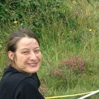

Alix Sauve

As a community ecologist, I am keen on investigating the structure of ecological communities as well as their dynamics, so as to understand how they respond to disturbances. I study ecological communities as networks of interactions, trying to capture the architecture of such webs, their variabilities and their dynamics.
Modeling of community dynamics (numerical simulations and analytical approach), ecological network analysis, and null models are key in my toolbox.
Ecological networks with multiple interaction types
I explore the relationships between the stability and the structure of ecological networks exhibiting a diversity of inter-specific interaction types. Until recently, this level of complexity has often been ignored, and interaction types have been studied separately. For instance, pollination and herbivory networks are poorly understood as a whole, though they share species, can occur in the same place and the same period of time. My Ph. D. aimed at understanding better how such networks work dynamically as a whole, and suggests ways to investigate their structure.
Food webs at the landscape scale
Species move over space and time in the mosaic of habitats that constitutes a landscape. Hence, food webs are not constrained to specific habitats, sharing species and interactions. But how are they structured in the landscape? How separated habitats are regarding trophic interactions? How the diversity of habitats affects community structure, stability and functioning? Many questions which the NERC project I’ve joined during my post-doc at the University of Bristol aims at answering.
Seasonality of food webs
Over the course of a year, species abundances fluctuate following seasonal patterns. There is also a growing body of empirical evidences that interactions change so that the architecture of food webs is not constant over time. Understanding the dynamical consequences of this variability is still under scrutiny, especially in food webs for which we often have a frozen picture. I am currently looking into on how this seasonal forcing affects community stability.
Communications
Peer-reviewed publications
- Sauve A. M. C., Taylor R. A., Barraquand F. The effect of seasonal strength and abruptness on predator-prey dynamics. Journal of Theoretical Ecology. 2020, 491, 110175. PDF
- McWilliams C., Lurgi M., Montoya J. M., Sauve A. M. C., Montoya D. The stability of multitrophic communities under habitat loss. Nature Communications. 2019, 10(1), 2322.
- Hackett T. D.*, Sauve A. M. C.*, Montoya D., Tylianakis J., Davis N., Memmott J. Reshaping our understanding of species’ roles in landscape-scale networks. Ecology Letters. 2019, 22(9), 1367-1377.
- Thébault E., Sauve A. M. C., Fontaine C. (2017). Merging antagonistic and mutualistic bipartite webs: a first step to integrate interaction diversity into network approaches. “Food Webs Stability, State Transitions, and the Adaptive Capacity of Ecosystems”, Editors : Peter C. de Ruiter, Volkmar Wolters, John C. Moore, Cambridge University Press, Cambridge.
- Sauve A. M. C., Thébault E., Pocock M. J. O., Fontaine C. How plants combine pollination and herbivory networks: patterns and contribution to community stability. Ecology. 2016, 97 (4), 908-917.
- Sauve A. M. C., Fontaine C., Thébault E. Dynamics of a diamond-shaped module with multiple interaction types. Theoretical Ecology. 2016, 9(1), 27-37.
- Sauve A. M. C., Fontaine C., Thébault E. Structure–stability relationships in networks combining mutualistic and antagonistic interactions. Oikos. 2014, 123: 378-384.
Submitted
- Sauve A. M. C., Barraquand F. From winter to summer and back: lessons from the parameterisation of a seasonal food web model for the Bialowieza forest.
In preparation
- Sauve A. M. C., Hackett T. D., Montoya D., Tylianakis J., Memmott J. Mapping functional units on a mosaic of habitats.
- Hackett T. D., Sauve A. M. C., Montoya D., Maia K. P., Potts, S., Vaughan, I, Memmott J. Are we missing the wood for the trees?: The effect of diversity of habitats on communities of plants and insects.
- Maia K. P., Sauve A. M. C., Vaughan I., Memmott J. Context dependency of keystone plants species.
- Sauve A. M. C., Barraquand F. On scaling up and down models of community dynamics.
*Authors equally contributed to this work.
Brief CV
Since October 2016: Postdoctoral research associate in quantitative ecology at the University of Bordeaux (France), Integrative and Theoretical Ecology group
2015-2016: Postdoctoral research associate in ecological network analysis, University of Bristol (United Kingdom), Department of Computer Science, School of Biological Sciences
2011 – 2014: Teaching assistant (“Monitorat d’Initiation à l’Enseignement Supérieur”) in Plant Biology, University of Paris Diderot (France)
2011 – 2014: Ph. D. candidate in Theoretical Ecology, University of Paris Diderot (France) – iEES Paris and CESCO, Chaire “Modélisation Mathématique et Biodiversité”
Contact
alixsauveu-bordeauxfr
Past and present collaborators Frederic Barraquand, Coralie Picoche, Laure Carassou, Yohan Sahraoui, Jane Memmott, Steve Gregory, Talya Hackett, Daniel Montoya, Jason Tylianakis, Kate Pereira Maia, Elisa Thébault, Colin Fontaine